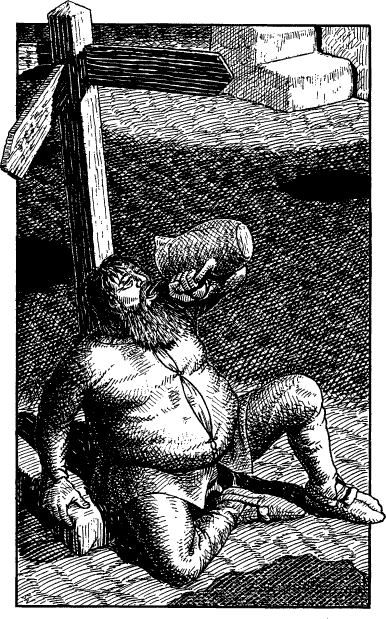

84
‘Do you mind if I keep this?’ you ask, motioning to the amulet.
‘I’ve no objection,’ replies Kadharian. ‘I hope it helps you to discover what is truly going on in the north.’
Carefully you re-wrap the talisman and slip it into the pocket of your tunic (record this Black Amulet as a Special Item on your Action Chart—you need not discard another item in its favour if you already possess the maximum allowed). Then, after a meal and a soothingly hot bath, you bid farewell to the President and take your leave of the palace by way of the stables.

Night has thickened the blanket of mist which lines the narrow streets and alleys of Helgor. Guided by your Kai instincts, you set off northwards, but soon you have cause to regret not having thought of asking Kadharian for directions to the Crooked Sage Inn. Helgor is an old city and its chaotic streets follow no logical plan. After several wrong turns you come upon a square where the vanes of a rotting signpost point to three exits. Slumped at its base there sits a dishevelled fat man with a yellow-streaked beard, who is gulping mouthfuls of cheap ale from a filthy stone pitcher. You attempt to use your Kai Pathsmanship skill to read the signpost but with no success—it is completely illegible.
If you wish to leave the square by the north exit, turn to 16.
If you wish to leave the square by the east exit, turn to 332.
If you wish to leave the square by the west exit, turn to 161.
If you decide to ask the fat man for directions to the Crooked Sage Inn, turn to 287.